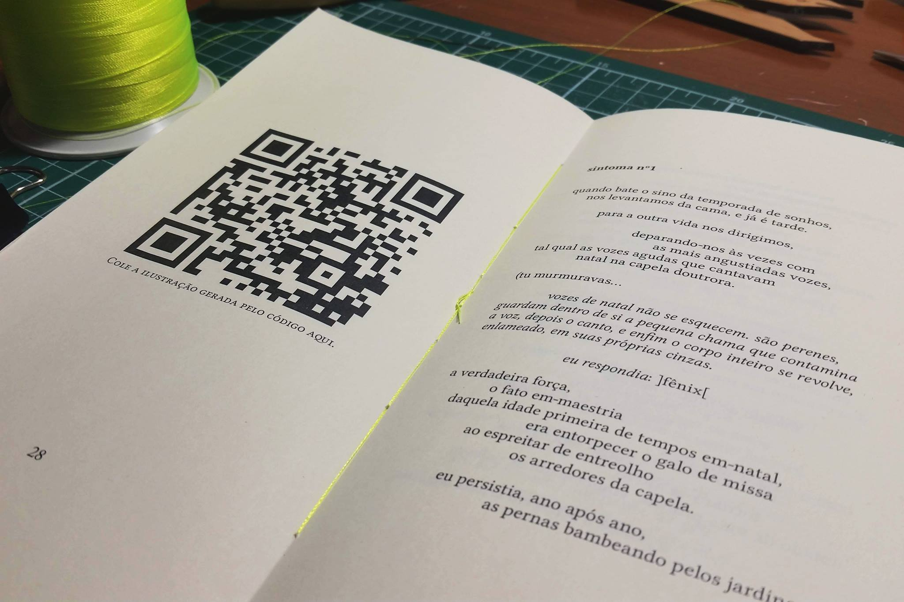

Mídias
Acesse o audiobook da obra: Absoleto_soundcloud.
Amostra do poema Ser-Hóstia da Palavra:
Interaja com as ilustrações digitais da obra: Ilustrações.
Amostra do poema Sintoma n. 1:
Prefácio de Jorge Sesarino
doutor em Ciências Psicológicas pela Université de Liège
Lucas Haas Cordeiro é escritor e poeta, sabe disso e sua intimidade com a palavra é singular. Ele cria, inventa, desinventa, constrói, desconstrói, toca o ser. O poeta faz amor com as palavras; não se serve de palavras, antes serve a palavra. Assim, a poesia é uma tentativa desesperada de dizer o indizível, sendo por isso a arte do impossível, mas que mesmo assim faz-se possível dizer para muito além do que comumente se diz: o poeta fala a linguagem do impossível de dizer. Para Aristóteles, "a poesia é a mãe de todas as artes escritas". Falando de poesia, Hölderin disse que "o desejo é que as palavras se abram como flores". Na etimologia da palavra, poesia vem do grego "poiesis", que significa ação, criação, gestação; trata-se de um fazer com as palavras. As palavras têm pode alucinatório, articulam o desejo inconsciente e afetam a alma quando se devolve a elas o seu feitiço originário. Ela faz corpo, ela é antes do corpo, é a pulsão cravada no corpo, mas é também o que preenche os espaços entre os corpos quando a mãe, com sua "Palavra-Dom-de-Amor", enlaça o grito do bebê, fazendo a primeira poesia.
A poesia é a arte da escrita e a arte não é idealização, é a sublimação, por isso a arte não socializa, ela subverte e marginaliza. Heidegger dizia que a poesia é como um sonho, mas sem nenhuma realidade, um jogo de palavras sem a seriedade da ação. A poesia é revelação e tratamento poético da linguagem que articula palavra e corpo. A poesia revela como o corpo sente a palavra e como a palavra ressoa no corpo. Jaques Lacan, no Seminário 25, disse que a poesia está do lado do analisante: "o analisante fala, faz poesia". A poesia de Lucas Haas Cordeiro toca o corpo quando ele diz: "corpo que pulsa - mas pulsa em lento, pulsa em ré - pulsa em asa", ou quando diz: "o primeiro corpo era cru da angústia, da angústia mais pura, que se bebe em leite de mãe". Num deslize quase metonímico entre o amor e o desejo, o autor parece homenagear grandes poetas em seus estilos.
Assim, serve a palavra para que ela diga do seu impossível do dizer.
